Capítulo 2 Generación de variabilidad y estimación de parámetros genéticos en una población F2 derivada del cruzamiento de entradas contrastantes de algodón (Gossypium hirsutum L.)
2.1 Introducción
La caracterización morfofisiológica y productiva de entradas del banco de germoplasma del INTA, presentada en el Capítulo 1, permitió identificar una amplia variabilidad fenotípica entre entradas de G. hirsutum y seleccionar genotipos con perfiles contrastantes para rendimiento y calidad de fibra. En particular, BGSP-00166 y SP-41255 se destacaron como los materiales de mayor divergencia fenotípica: mientras BGSP-00166 exhibió una arquitectura compacta y valores superiores de longitud, resistencia y uniformidad de fibra, SP-41255 presentó mayor rendimiento de fibra al desmote, número de cápsulas por planta y biomasa reproductiva. Esta complementariedad fenotípica los convierte en parentales idóneos para la generación de poblaciones segregantes orientadas a integrar ambos grupos de caracteres mediante recombinación genética.
En el marco de los programas de mejoramiento genético del algodón, la combinación de alto rendimiento con buena calidad de fibra constituye uno de los principales desafíos. La existencia de correlaciones negativas entre rendimiento y caracteres tecnológicos como longitud y resistencia de fibra, documentada ampliamente en la literatura (Y. Li et al., 2023; McCarty et al., 2006; Meredith, 1984), exige estrategias de selección que permitan superar las restricciones impuestas por ligamiento genético y efectos pleiotrópicos. En este contexto, la generación de poblaciones F2 a partir de cruzamientos biparentales entre genotipos contrastantes constituye una herramienta fundamental para estimar la heredabilidad de los caracteres, evaluar la presencia de segregación transgresiva e identificar individuos con combinaciones fenotípicas favorables (Kearsey & Pooni, 1996).
La heredabilidad en sentido amplio (\(h_{bs}^{2}\)) cuantifica la proporción de la varianza fenotípica atribuible a diferencias genotípicas (Kearsey & Pooni, 1996). En algodón, se han reportado estimaciones de heredabilidad para rendimiento de fibra, sus componentes y atributos tecnológicos (De Carvalho et al., 2022; Meredith, 1984; Nidagundi et al., 2023; Ribeiro et al., 2017; Tang et al., 1996). Estos antecedentes indican que caracteres como el porcentaje de fibra y la longitud presentan heredabilidades altas, mientras que el rendimiento bruto y el número de cápsulas muestran valores intermedios a bajos, con implicancias directas sobre el momento y la estrategia de selección más apropiados.
La segregación transgresiva, aparición de individuos F2 con fenotipos que superan los valores extremos de los parentales, ha sido reportada en algodón para caracteres de rendimiento y calidad de fibra (Khan et al., 2005; Nidagundi et al., 2023). Este fenómeno, atribuible a la recombinación de alelos favorables y a efectos epistáticos, incrementa la variabilidad disponible y amplía las posibilidades de selección de ideotipos superiores.
Asimismo, la identificación de loci de caracteres cuantitativos (QTLs) mediante marcadores SSR constituye una herramienta de apoyo a la selección asistida por marcadores. Diversas investigaciones han reportado QTLs para caracteres agronómicos y de calidad de fibra en algodón (Ademe et al., 2017; Baytar et al., 2018; Iqbal & Rahman, 2017; C. Q. Li et al., 2017; Liu et al., 2012; Liu et al., 2018; X. Liu et al., 2017; Qin et al., 2015; Shen et al., 2007; Shi et al., 2015; Su et al., 2016; B. Wang et al., 2007; M. Wang et al., 2014; Xia et al., 2014; S. Zhang et al., 2016; Z.-S. Zhang et al., 2005).
En este contexto, se plantea como objetivo generar y caracterizar una población segregante F2 derivada del cruzamiento biparental BGSP-00166 × SP-41255, con el fin de estimar parámetros genéticos (segregación transgresiva, heredabilidad en sentido amplio y correlaciones genéticas) para caracteres de rendimiento y calidad de fibra, e identificar marcadores SSR asociados a QTLs de importancia agronómica.
2.2 Materiales y métodos
2.2.1 Sitio experimental y material vegetal
El trabajo se realizó en la Estación Experimental Agropecuaria Reconquista del INTA (29°15’ S; 59°44’ O; 50 m s.n.m.), Santa Fe, Argentina. Durante las campañas 2018–2020 se llevaron a cabo los cruzamientos, la generación de las poblaciones segregantes y las evaluaciones fenotípicas a campo. La caracterización molecular mediante marcadores SSR se realizó en campañas posteriores en la misma institución.
2.2.2 Generación de variabilidad genética
BGSP-00166 y SP-41255 fueron seleccionados como parentales en base a los resultados del Capítulo 1. BGSP-00166 es una línea endogámica derivada del cruce Chaco 510 × SP 6269; SP-41255 proviene del cruce SP-81270-7 × Mij. 3. Morfológicamente difieren en su estructura de planta (Figura 2.1): BGSP-00166 es más compacta, con menor distancia entre la primera posición fructífera y el tallo, mientras que SP-41255 presenta una estructura más abierta.
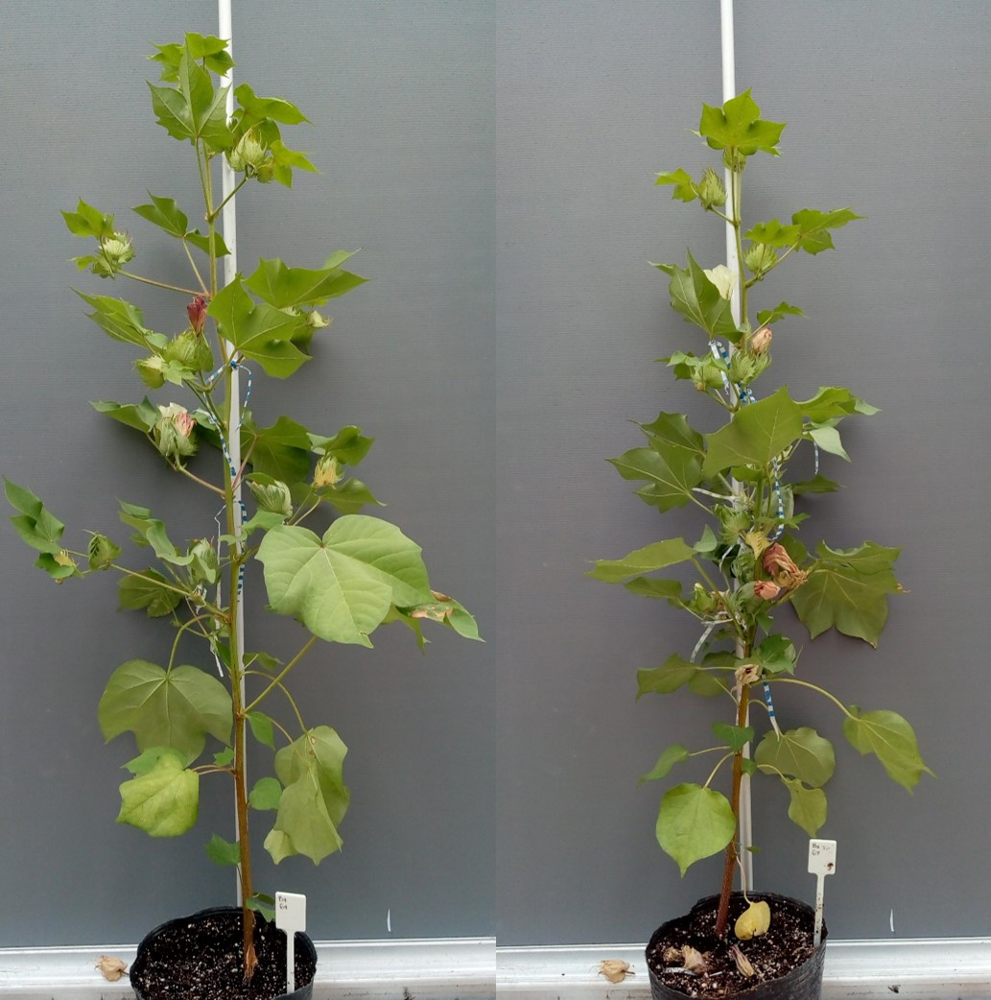
Figure 2.1: Genotipos parentales utilizados en el cruzamiento biparental. Izquierda: SP-41255 (estructura abierta, mayor número de cápsulas). Derecha: BGSP-00166 (arquitectura compacta, mayor calidad de fibra)
El cruzamiento se realizó en ambas direcciones para evaluar la existencia de efecto recíproco. La emasculación se efectuó removiendo estambres con pinzas antes de la antesis (estadio en forma de vela), en las horas de la tarde. Al día siguiente se transfirió el polen del parental masculino, siguiendo el protocolo de Acquaah (2012). Las semillas F1 se sembraron en invernadero y se autofecundaron para producir semillas F2.
En la campaña 2019–2020, la población F2 se sembró en hileras no replicadas bajo condiciones de campo, con 10 m de longitud y 1 m de separación entre hileras (Figura 2.2). Las generaciones no segregantes (F1 en ambas direcciones y parentales) se sembraron en las mismas condiciones. Se obtuvo una F2 de 205 plantas para la dirección SP-41255 × BGSP-00166 y 234 plantas para la dirección recíproca. En el mismo ensayo se incluyeron 17 plantas de BGSP-00166, 19 de SP-41255 y 11 de la F1.
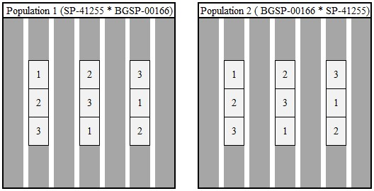
Figure 2.2: Diseño del ensayo de campo con las dos poblaciones F generadas a partir del cruzamiento SP-41255 × BGSP-00166 y su recíproco. En el ensayo se distribuyeron al azar plantas del parental SP-41255 (1), generación F (2) y parental BGSP-00166 (3)
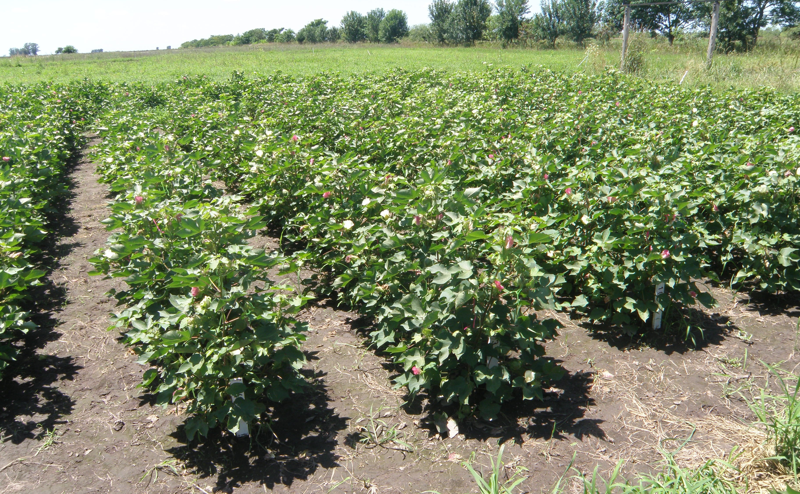
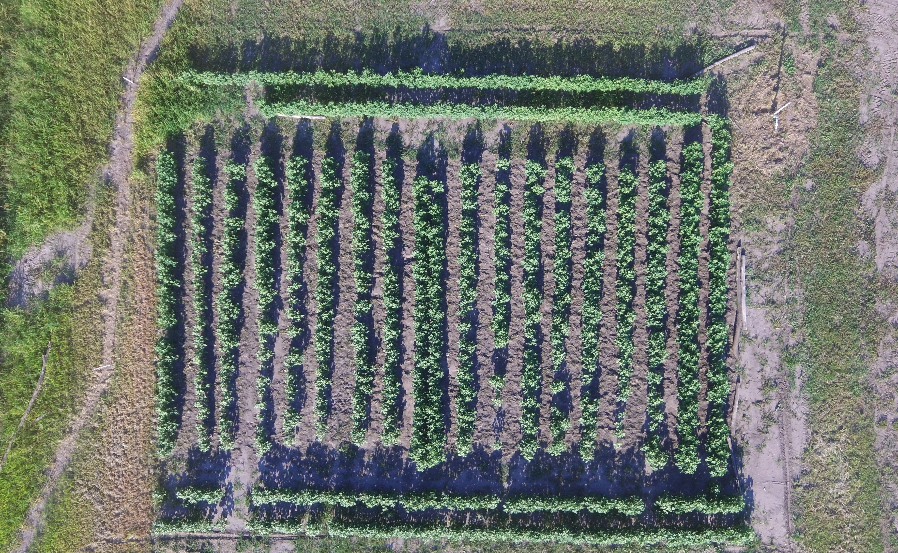
Figure 2.3: Ensayo a campo de la población F₂ derivada del cruzamiento BGSP-00166 × SP-41255. (Izq.) Vista del cultivo en estado reproductivo. (Der.) Vista aérea obtenida mediante drone donde se aprecia la disposición de las hileras de la población F₂ y las generaciones no segregantes (parentales y F₁), con 10 m de longitud y 1 m de separación entre hileras. EEA Reconquista, INTA, Santa Fe, Argentina. Campaña 2019–2020
2.2.3 Caracteres evaluados
Cada planta fue cosechada individualmente en madurez. Se evaluaron los siguientes caracteres: rendimiento de algodón en bruto en (RB en g), rendimiento de fibra (RF en g), rendimiento de fibra al desmote (RFD en %), peso de capullo (PC en g), número de capullos por planta (NC), longitud de fibra (UHML en mm), resistencia de fibra (Str en g tex-1), micronaire (Mic) e índice de uniformidad de fibra (IU en %). Las determinaciones de calidad de fibra se realizaron con equipo HVI Uster 1000 (APPA – Reconquista, Santa Fe).
2.2.4 Caracterización molecular mediante marcadores SSR e identificación de QTLs
Se evaluaron los polimorfismos entre los dos parentales mediante el análisis de un total de 84 primers SSR (simple sequence repeat), incluyendo las series BNL, CGR, CIR, DC, DPL, GH, HAU, JESPR, MGHES, MUCS, MUSB, MUSS, NAU y TMB. La selección de marcadores se basó en bibliografía disponible (Ademe et al., 2017; An et al., 2010; Baytar et al., 2018; Iqbal & Rahman, 2017; C. Q. Li et al., 2017; Liu et al., 2012; Liu et al., 2018; X. Liu et al., 2017; Qin et al., 2015; Shen et al., 2007; Shi et al., 2015; Su et al., 2016; B. Wang et al., 2007; M. Wang et al., 2014; Xia et al., 2014; S. Zhang et al., 2016; Z.-S. Zhang et al., 2005) y la base de datos CottonGen (http://www.cottongen.org). El ADN se aisló con el método CTAB modificado (Paterson et al., 1993; Zhang & Stewart, 2000). La amplificación por PCR y la separación de productos se realizaron según Lin et al. (2005), en geles de poliacrilamida desnaturalizantes al 2% con tinción de plata.
2.2.5 Análisis estadístico
Se realizó prueba de Levene para homogeneidad de varianzas en generaciones no segregantes, y Shapiro–Wilk para normalidad. La comparación entre parentales y F1 se realizó con LSD de Fisher. Las medias de las poblaciones F1 y F2 recíprocas se compararon para evaluar efecto recíproco.
La segregación transgresiva se evaluó mediante Chi-cuadrado (Rodriguez et al., 2005). Los fenotipos extremos se definieron como individuos F2 que superaron la media parental más dos desvíos estándar (prueba unilateral; 2,5% de individuos esperados; n = 302 plantas → ~7 individuos esperados).
La heredabilidad en sentido amplio se estimó siguiendo a Kearsey & Pooni (1996):
\[h_{bs}^{2}=\frac{\sigma^{2}G}{\sigma^{2}Ph}\times100 \qquad \sigma^{2}E = \frac{\sigma^{2}P_1 + \sigma^{2}P_2 + \sigma^{2}F_1}{3} \qquad \sigma^{2}G = \sigma^{2}Ph - \sigma^{2}E\]
Las correlaciones genéticas se estimaron a partir de matrices de covarianza de las generaciones segregantes y no segregantes, siguiendo la metodología de Kearsey & Pooni (1996). Todos los análisis se realizaron en R (R Core Team, 2024), con nivel de significancia del 5% (p ≤ 0,05).
La asociación entre los marcadores moleculares y los caracteres de interés agronómico se determinó a través del método de un solo punto (single point analysis, Tanksley, 1993) con el fin de detectar su ligamiento. Para ello, se realizó ANOVA a un criterio de clasificación en el cual los diferentes marcadores fueron las fuentes de variaciónes. Se estableció un valor de probabilidad de p < 0,05 como límite para definir las diferencias entre las medias de los caracteres según el marcador (variable clasificatoria). Se utilizó el valor de R2 para estimar el porcentaje de variancia fenotípica total explicada para el QTL estudiado por cada marcador (Collard et al. 2005)
2.3 Resultados
2.3.1 Caracterización del cruce biparental BGSP-00166 × SP-41255
2.3.1.1 Generaciones no segregantes: parentales y F1
Los genotipos parentales BGSP-00166 y SP-41255 presentaron diferencias significativas para todos los caracteres evaluados, con excepción del RB, para el cual no se detectaron diferencias entre ambos (Tabla 2.1). La generación F1 mostró valores de RB superiores a los de ambos parentales, con una heterosis del 40,0 % y una heterosis útil del 38,0 %. Para PC, la F1 exhibió valores similares a BGSP-00166, mientras que para RF, RFD y NC los valores se aproximaron a los de SP-41255. El RFD de la F1 resultó intermedio entre los dos parentales. En cuanto a los caracteres de calidad de fibra, BGSP-00166 superó a SP-41255 en UHML, Str e IU, mientras que presentó valores inferiores de Mic. La F1 mostró valores similares a los de BGSP-00166 para UHML, Str e IU, y valores intermedios entre ambos parentales para Mic.
| Generaciones | RB | RF | RFD | PC | NC | UHML | Str | Mic | IU |
|---|---|---|---|---|---|---|---|---|---|
| BGSP-00166 | 89,5a (1266,4) | 25,8a (110,3) | 30,9a (0,9) | 6,2b (0,4) | 14,5a (29,8) | 32,5b (0,3) | 37,1b (2,8) | 3,9a (0,1) | 85,5b (1,8) |
| SP-41255 | 86,9a (761,8) | 36,6b (126,1) | 43,4c (0,8) | 4,6a (0,3) | 19,1b (29,6) | 26,9a (0,6) | 30,7a (2,9) | 4,8c (0,1) | 82,0a (2,1) |
| 123,5b (1013,1) | 44,1b (126,6) | 37,4b (0,4) | 6,4b (0,6) | 19,4b (26,7) | 32,0b (0,3) | 37,4b (0,9) | 4,2b (0,1) | 86,1b (0,9) | |
| 114,1 (1957,2) | 37,5 (227,3) | 37,2 (4,4) | 5,9 (0,9) | 19,7 (52,5) | 31,3 (1,5) | 36,1 (5,2) | 4,3 (0,2) | 84,9 (1,7) | |
| Referencias: \(^a\)~Número de plantas: BGSP-00166 (17), SP-41255 (19), F\(_1\) (11) y F\(_2\) (302). RB: rendimiento de algodón en bruto en g; RF: rendimiento de fibra en g; RFD: porcentaje de fibra en %; PC: peso de capullo en g; NC: número de capullos por planta; UHML: longitud de fibra en mm; Str: resistencia de fibra en g tex-1; Mic: micronaire; IU: uniformidad de fibra en %. Letras distintas indican diferencias significativas según LSD de Fisher (p-valor 0{,}05) |
La comparación entre las poblaciones recíprocas F1 y F2 no mostró diferencias significativas para ningún carácter (p > 0,05; Tabla 2.2), confirmando la ausencia de efecto recíproco. En consecuencia, las poblaciones recíprocas F1 y F2 fueron fusionadas para los análisis subsiguientes.
| Poblaciones | RB | RF | RFD | PC | NC | UHML | Str | Mic | IU |
|---|---|---|---|---|---|---|---|---|---|
| Poblaciones | |||||||||
| 1 | 119,91 | 42,93 | 37,46 | 6,66 | 15,38 | 32,05 | 37,15 | 4,33 | 86,05 |
| 2 | 133,08 | 47,12 | 37,22 | 5,79 | 18,33 | 31,79 | 38,12 | 4,04 | 86,17 |
| p-valor | 0,569 | 0,610 | 0,597 | 0,115 | 0,143 | 0,537 | 0,136 | 0,104 | 0,857 |
| Poblaciones | |||||||||
| 1 | 114,49 | 38,24 | 37,09 | 5,73 | 15,20 | 31,28 | 35,62 | 4,28 | 84,75 |
| 2 | 113,91 | 36,74 | 37,49 | 5,94 | 14,68 | 31,23 | 36,06 | 4,28 | 85,01 |
| p-valor | 0,913 | 0,411 | 0,115 | 0,060 | 0,357 | 0,712 | 0,075 | 0,963 | 0,099 |
2.3.1.2 Rendimiento y sus componentes en la población F2
La Figura 2.4 muestra la distribución de frecuencias de los caracteres de rendimiento en la población F2, junto con los valores correspondientes a los genotipos parentales y la F1.
![Distribución de frecuencias de los caracteres de rendimiento en la población F\textsubscript{2} (gráfico principal) y en los genotipos parentales (A: BGSP-00166; B: SP-41255) y la F\textsubscript{1} (C): rendimiento de algodón en bruto (RB, g planta\textsuperscript{-1}; panel 1), rendimiento de fibra (RF, g planta\textsuperscript{-1}; panel 2), porcentaje de fibra al desmote (RFD, \%; panel 3), número de cápsulas por planta (NC; panel 4) y peso de cápsula (PC, g cápsula\textsuperscript{-1}; panel 5).](figure/chap2/Para_compuestas/Fig_histogramas_rendimiento.png)
Figure 2.4: Distribución de frecuencias de los caracteres de rendimiento en la población F (gráfico principal) y en los genotipos parentales (A: BGSP-00166; B: SP-41255) y la F (C): rendimiento de algodón en bruto (RB, g planta; panel 1), rendimiento de fibra (RF, g planta; panel 2), porcentaje de fibra al desmote (RFD, %; panel 3), número de cápsulas por planta (NC; panel 4) y peso de cápsula (PC, g cápsula; panel 5).
El RB en la F2 varió entre 40,3 y 273,5 g planta-1. Los individuos extremos observados superaron significativamente la proporción esperada por azar, evidenciando segregación transgresiva (Tabla 2.4). El RF varió de 12,6 a 91,2 g planta-1, exhibiendo también segregación transgresiva significativa. El RFD osciló entre 32 y 44,4% en la F2; a diferencia de RB y RF, no se encontraron individuos F2 que superaran la media parental más dos desvíos estándar, por lo que RFD no presentó segregación transgresiva. El NC varió entre 7 y 48 cápsulas por planta, mostrando segregación transgresiva significativa. El PC varió de 3,1 a 8,1 g cápsula-1, con individuos que superaron el valor del parental de mayor peso (BGSP-00166, 6,2 g).
2.3.1.3 Calidad de fibra en la población F2
La Figura 2.5 muestra la distribución de frecuencias de los caracteres de calidad de fibra en la población F2.
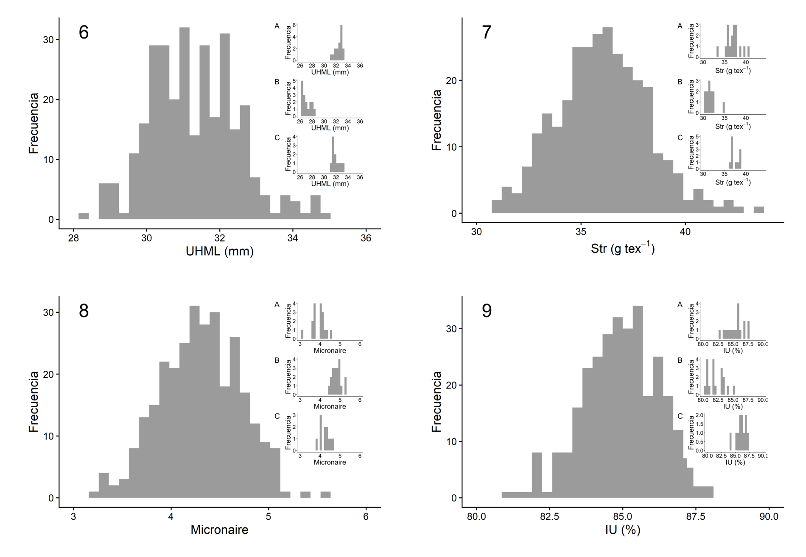
Figure 2.5: Distribución de frecuencias de los caracteres de calidad de fibra en la población F (gráfico principal) y en los genotipos parentales (A: BGSP-00166; B: SP-41255) y la F (C): longitud de fibra (UHML, mm; panel 6), resistencia de fibra (Str, g tex; panel 7), micronaire (Mic; panel 8) e índice de uniformidad (IU, %; panel 9).
La longitud de fibra (UHML) varió de 28,1 a 35 mm en la F2, con individuos que superaron el valor del parental de mayor longitud (BGSP-00166), confirmando segregación transgresiva para este carácter. La resistencia de fibra (Str) varió entre 29,7 y 44,8 g tex-1; si bien se observaron algunos individuos con valores superiores al parental de mayor resistencia, su proporción no fue significativamente diferente a la esperada, por lo que Str no exhibió segregación transgresiva significativa. El micronaire (Mic) varió de 2,7 a 5,6, sin evidenciar segregación transgresiva. El índice de uniformidad (IU) presentó el rango más acotado, de 80,1 a 88,1%, y tampoco mostró segregación transgresiva.
2.3.1.4 Heredabilidad en sentido amplio
Los caracteres RFD (0,83), UHML (0,72) y Mic (0,6) exhibieron heredabilidades altas (> 0,60; Tabla 2.3), indicando que la selección en generaciones tempranas puede ser efectiva para estos rasgos. Los caracteres RB, RF, PC, NC y Str presentaron heredabilidades intermedias (0,47–0,58), mientras que IU mostró la menor heredabilidad (0,07).
| RB | RF | RFD | PC | NC | UHML | Str | Mic | IU | |
|---|---|---|---|---|---|---|---|---|---|
| σ²E | 1013,79 | 121,01 | 0,73 | 0,44 | 28,68 | 0,41 | 2,20 | 0,08 | 1,58 |
| σ²G | 943,24 | 106,01 | 3,58 | 0,49 | 23,79 | 1,08 | 3,07 | 0,12 | 0,12 |
| σ²Ph | 1957,03 | 227,02 | 4,30 | 0,93 | 52,47 | 1,50 | 5,27 | 0,20 | 1,70 |
| h²bs | 0,48 | 0,47 | 0,83 | 0,53 | 0,45 | 0,72 | 0,58 | 0,60 | 0,07 |
| Referencias: RB: rendimiento de algodón en bruto en g; RF: rendimiento de fibra en g; RFD: porcentaje de fibra en %; PC: peso de capullo en g; NC: número de capullos por planta; UHML: longitud de fibra en mm; Str: resistencia de fibra en g tex-1; Mic: micronaire; IU: uniformidad de fibra en %. |
2.3.1.5 Segregación transgresiva e individuos F2 con combinaciones favorables de caracteres
Los resultados del análisis de Chi-cuadrado para la segregación transgresiva se presentan en la Tabla 2.4. Los caracteres RB, RF, NC y PC mostraron segregación transgresiva significativa (p < 0,05).
| Carácter | Ind. esperadosᵃ | Ind. observados | χ² | p-valor |
|---|---|---|---|---|
| RB | 7 | 38 | 137,29 | <0,05 |
| RF | 7 | 26 | 51,57 | <0,05 |
| NC | 7 | 28 | 63,00 | <0,05 |
| PC | 7 | 13 | 5,14 | <0,05 |
| UHML | 7 | 13 | 5,14 | <0,05 |
| Str | 7 | 12 | 3,57 | 0,06 |
| Referencias: ᵃ2,5% de las 302 plantas de la F₂ (~7 individuos). χ²: Chi-cuadrado. RB: rendimiento de algodón en bruto en g; RF: rendimiento de fibra en g; NC: número de capullos por planta; PC: peso de capullo en g; UHML: longitud de fibra en mm; Str: resistencia de fibra en g tex-1 |
La Figura 2.6 presenta la distribución conjunta de pares de caracteres en la F2. Las combinaciones con mayor número de individuos que superaron simultáneamente la media más un desvío estándar para ambos rasgos fueron IU–RFD (6 individuos), UHML–NC (7), IU–NC (7) e IU–PC (5). Tres combinaciones presentaron individuos que superaron la media más dos desvíos estándar: UHML–PC (1), Str–PC (1) e IU–NC (1). No se encontraron individuos F2 con valores extremos para la combinación UHML–RFD. Estos individuos con combinaciones superiores en caracteres de rendimiento y calidad de fibra podrían constituir el material de partida para avanzar en la generación de líneas homocigóticas con dichas combinaciones.
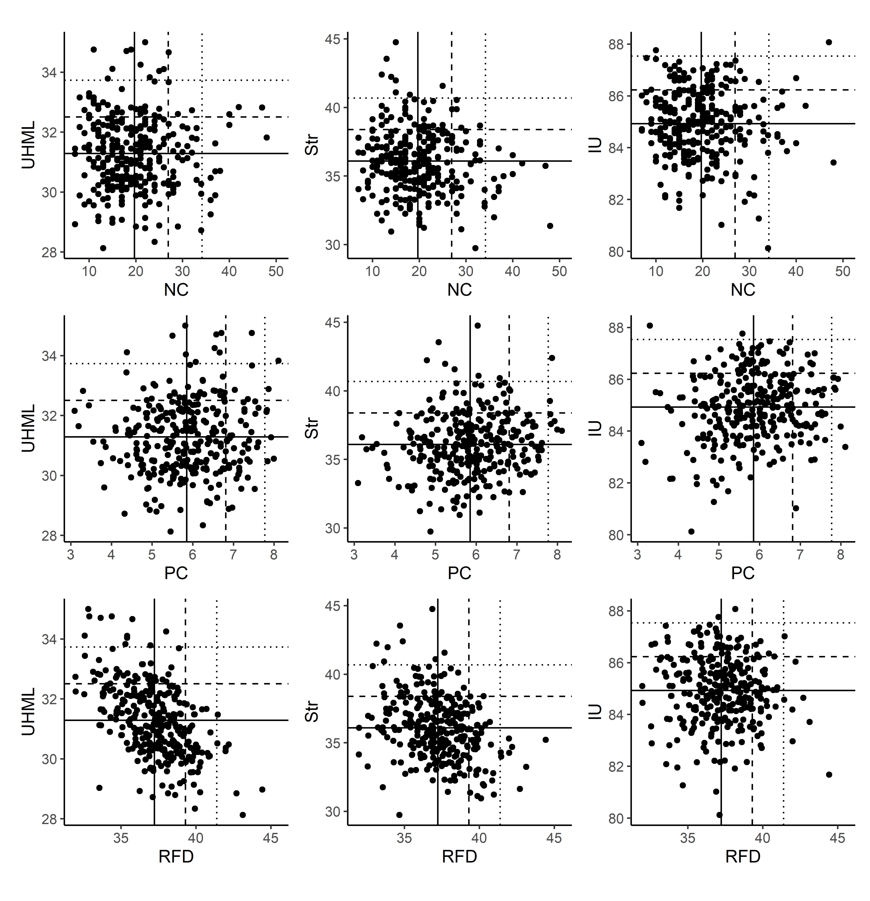
Figure 2.6: Distribución conjunta de pares de caracteres en la población F. La línea continua indica la media de la F; la línea discontinua, la media más un desvío estándar; la línea de puntos, la media más dos desvíos estándar. NC: número de capullos por planta; PC: peso de capullo en g; RFD: porcentaje de fibra en %; UHML: longitud de fibra en mm; Str: resistencia de fibra en g tex-1; IU: uniformidad de fibra en %
2.3.1.6 Correlaciones fenotípicas y genéticas en campo
Las correlaciones fenotípicas y genéticas entre los caracteres evaluados en la F2 se presentan en la Tabla 2.5. RF mostró una correlación positiva fuerte con NC, correlaciones positivas moderadas con PC y RFD, y una correlación negativa moderada con UHML, confirmando el antagonismo entre rendimiento y calidad de fibra observado en el Capítulo 1. Las correlaciones genéticas siguieron la misma dirección que las fenotípicas, aunque con mayor magnitud en algunos pares —particularmente RFD–UHML y Str–RF—, reflejando un componente genético adicional en estos antagonismos.
| RB | RF | RFD | PC | NC | UHML | Str | Mic | |
|---|---|---|---|---|---|---|---|---|
| RF | ,96*** (,93) |
|
||||||
| RFD | ,06 (,03) | ,22*** (,28) |
|
|||||
| PC | ,31*** (,34) | ,25*** (,20) | ,11 (,06) |
|
||||
| NC | ,89*** (,86) | ,88*** (,85) | ,03 (,02) | -,12* (-,14) |
|
|||
| UHML | ,00 (-,00) | -,06 (-,11) | -,53*** (-,63) | ,07 (,05) | -,03 (-,01) |
|
||
| Str | -,06 (-,31) | -,11 (-,42) | -,30*** (-,44) | ,14* (,22) | -,14* (-,44) | ,37*** (,36) |
|
|
| Mic | ,09 (,39) | ,18** (,55) | ,50*** (,69) | ,19*** (,20) | ,03 (,32) | -,33*** (-,37) | -,28*** (-,27) |
|
| IU | ,02 (-,07) | ,03 (-,04) | -,07 (-,42) | ,14* (,63) | -,05 (-,31) | ,37*** (,69) | ,35*** (,73) | ,10 (,53) |
| Referencias: p < 0,05; p < 0,01; p < 0,001. Los valores fenotípicos se ubican por debajo de la diagonal; los valores genéticos (entre paréntesis), por encima. RB: rendimiento de algodón en bruto en g; RF: rendimiento de fibra en g; RFD: porcentaje de fibra en %; PC: peso de capullo en g; NC: número de capullos por planta; UHML: longitud de fibra en mm; Str: resistencia de fibra en g tex-1; Mic: micronaire; IU: uniformidad de fibra en % |
2.3.2 Identificación de QTLs mediante marcadores SSR
2.3.2.1 Polimorfismo de marcadores y perfiles de amplificación
De los 84 marcadores SSR evaluados, 56 amplificaron correctamente en la población F2, de los cuales 4 resultaron polimórficos entre los parentales (Tabla B.1). Los resultados de tres marcadores (BNL1231, NAU1167 y NAU3017) se presentan a continuación.
La Figura 2.7 muestra los perfiles de amplificación en gel de poliacrilamida para los marcadores polimórficos seleccionados.
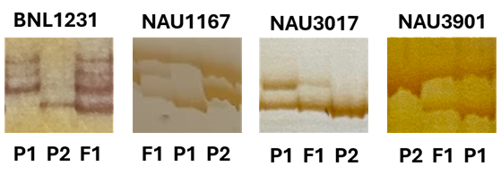
Figure 2.7: Perfiles de amplificación por PCR en gel de poliacrilamida desnaturalizante al 2%, teñido con plata, para los marcadores SSR polimórficos. P: BGSP-00166; P: SP-41255. Se muestran individuos representativos de la población F
2.3.2.2 Asociación marcador–carácter
Los resultados de asociación entre los marcadores SSR y los caracteres fenotípicos evaluados en la población F2 se presentan en la Tabla 2.6.
| Clase | RB | RF | RFD | PC | NC | SCI | UHML | Elg | Str | Mic | IU |
|---|---|---|---|---|---|---|---|---|---|---|---|
| BNL1231 | |||||||||||
| A | 97,01a | 33,88a | 37,54a | 5,77a | 13,03ab | 162,99a | 30,79b | 14,5a | 35,39a | 4,28a | 84,69a |
| B | 108,77a | 36,97a | 37,2a | 5,49a | 14,46a | 162,38a | 31,2ab | 14,1b | 35,4a | 4,47a | 84,76a |
| H | 93,32a | 31,16a | 36,76a | 6,13a | 11,7b | 166,14a | 31,5a | 14,17b | 35,67a | 4,25a | 84,86a |
| n | 140 | 136 | 136 | 138 | 140 | 99 | 99 | 99 | 99 | 99 | 99 |
| p-valor | 0,526 | 0,445 | 0,209 | 0,475 | 0,09 | 0,375 | <0,05 | 0,056 | 0,792 | 0,178 | 0,858 |
| NAU1167 | |||||||||||
| A | 102,79a | 37,88a | 37,19a | 5,74a | 11,84a | 165,44ab | 31,26ab | 14,19a | 35,54a | 4,34a | 85,08a |
| B | 92,98a | 30,28a | 35,98b | 5,67a | 12,91a | 169,51a | 31,68a | 14,2a | 35,68a | 4,24a | 85,41a |
| H | 96,99a | 32,89a | 37,06a | 5,84a | 13a | 161,42b | 31,04b | 14,13a | 35,6a | 4,36a | 84,34b |
| n | 138 | 133 | 133 | 136 | 138 | 99 | 99 | 99 | 99 | 99 | 99 |
| p-valor | 0,827 | 0,385 | <0,05 | 0,934 | 0,67 | <0,05 | 0,103 | 0,91 | 0,973 | 0,467 | <0,001 |
| NAU3017 | |||||||||||
| B | 100,04a | 33,15a | 37,4a | 6,23a | 13,79a | 166,87a | 31,31a | 14,44a | 35,55a | 4,19a | 84,99a |
| H/A | 98,39a | 33,59a | 36,97a | 5,67a | 12,62a | 162,81a | 31,16a | 14,09b | 35,33a | 4,35a | 84,72a |
| n | 119 | 115 | 115 | 117 | 119 | 87 | 87 | 87 | 87 | 87 | 87 |
| p-valor | 0,908 | 0,927 | 0,376 | 0,295 | 0,414 | 0,175 | 0,647 | <0,05 | 0,646 | 0,116 | 0,415 |
| NAU3901 | |||||||||||
| A | 108,65a | 37,88a | 37,15a | 5,47a | 15,22a | 164,44a | 30,96a | 14,18a | 35,53a | 4,34a | 84,97a |
| H/B | 96,81a | 31,86a | 37,24a | 6,02a | 12,31b | 164,77a | 31,34a | 14,29a | 35,53a | 4,26a | 84,74a |
| n | 103 | 101 | 101 | 103 | 103 | 81 | 81 | 81 | 81 | 81 | 81 |
| p-valor | 0,392 | 0,193 | 0,861 | 0,351 | <0,05 | 0,914 | 0,289 | 0,51 | 0,996 | 0,464 | 0,496 |
2.3.2.2.1 BNL1231
El marcador BNL1231 presentó asociación significativa (p < 0,05) con la longitud de fibra (UHML). Los individuos portadores del alelo de BGSP-00166 en homocigosis mostraron los mayores valores de UHML, en concordancia con el perfil fenotípico del parental de mayor calidad tecnológica (Figura 2.8).
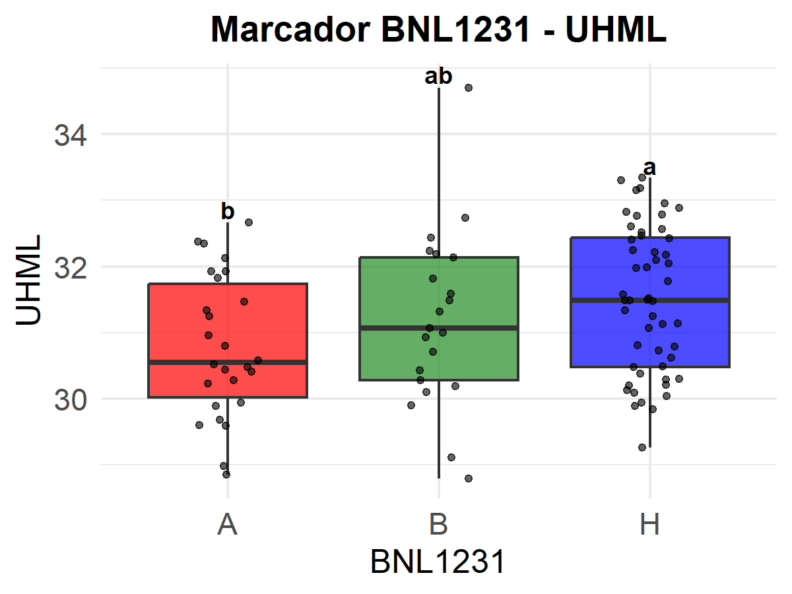
Figure 2.8: Distribución de los valores fenotípicos por clase genotípica del marcador BNL1231 para la longitud de fibra (UHML, mm). A: homocigoto SP-41255; B: homocigoto BGSP-00166; H: heterocigoto. Letras distintas indican diferencias significativas según LSD de Fisher (p ≤ 0,05)
2.3.2.2.2 NAU1167
El marcador NAU1167 presentó asociaciones significativas con RFD, SCI e IU (R² = 0,15 para IU). Los individuos portadores del alelo de SP-41255 en homocigosis exhibieron los mayores valores de RFD, mientras que los portadores del alelo de BGSP-00166 mostraron superiores SCI e IU (Figura 2.9).
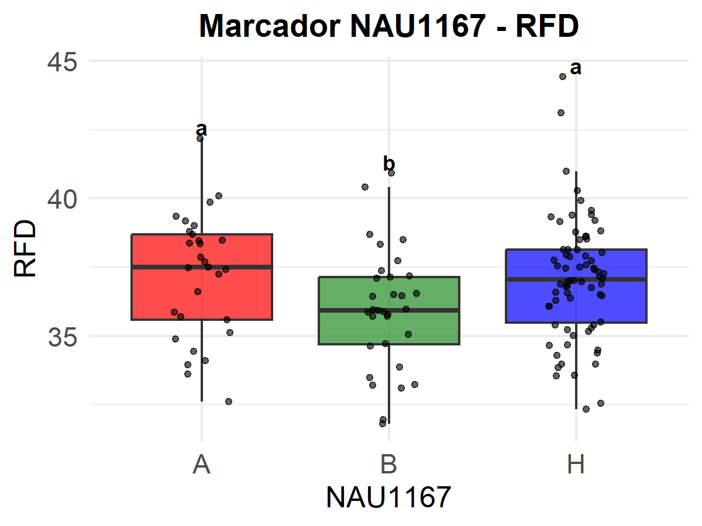
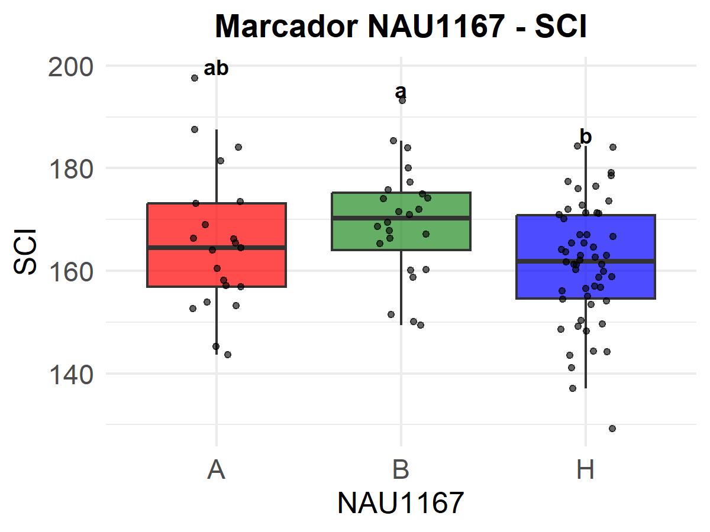
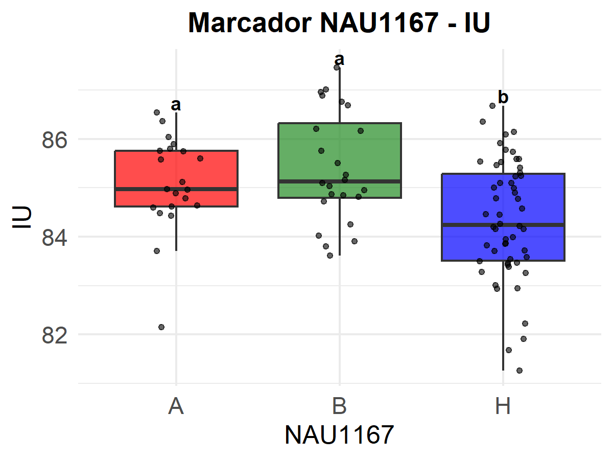
Figure 2.9: Distribución de los valores fenotípicos por clase genotípica del marcador NAU1167 para los caracteres con asociación significativa. (A) Rendimiento de fibra al desmote (RFD, %). (B) Índice de hilabilidad (SCI). (C) Índice de uniformidad de fibra (IU, %). A: homocigoto SP-41255; B: homocigoto BGSP-00166; H: heterocigoto. Letras distintas indican diferencias significativas según LSD de Fisher (p ≤ 0,05)
2.3.2.2.3 NAU3017
El marcador NAU3017 presentó asociación significativa con la elongación de fibra (Elg). Los individuos portadores del alelo de BGSP-00166 mostraron los mayores valores de Elg, reforzando la contribución de este parental a la mejora de los atributos tecnológicos de la fibra (Figura 2.10).
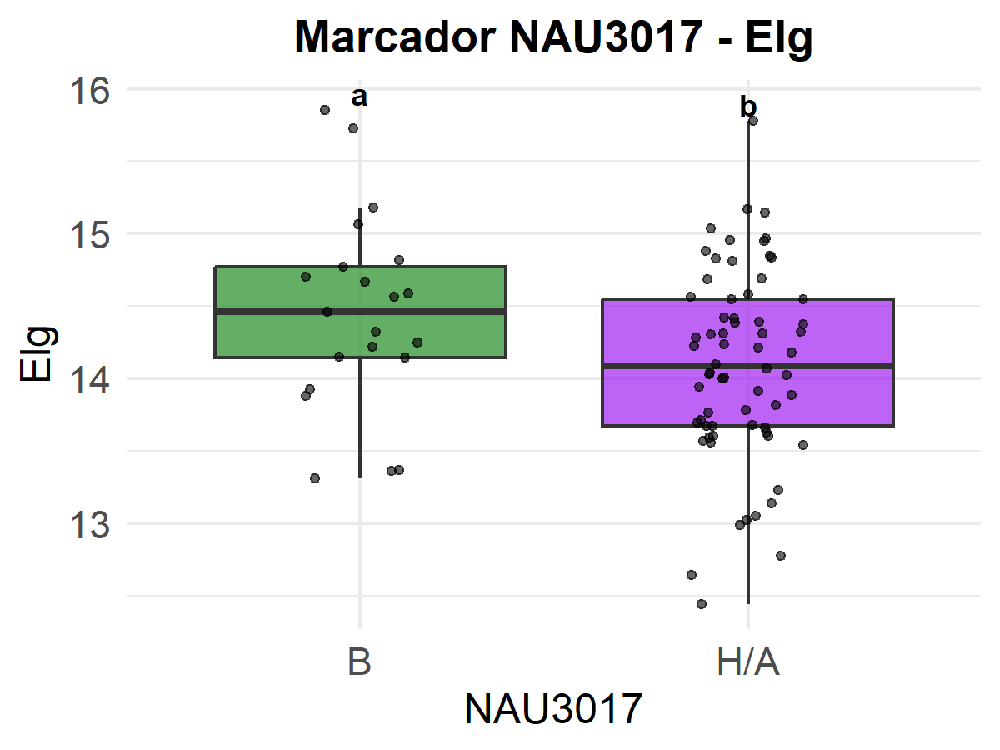
Figure 2.10: Distribución de los valores fenotípicos por clase genotípica del marcador NAU3017 para la elongación de fibra (Elg, %). B: homocigoto BGSP-00166; H/A: heterocigoto/homocigoto SP-41255. Letras distintas indican diferencias significativas según LSD de Fisher (p ≤ 0,05)
En todos los casos, los alelos del parental BGSP-00166 se asociaron con mayores valores de SCI, UHML, IU y Elg, mientras que los alelos de SP-41255 se asociaron con mayores valores de RFD. Este patrón es consistente con los perfiles fenotípicos identificados en el Capítulo 1 y confirma la complementariedad de ambos parentales para la selección de combinaciones superiores de rendimiento y calidad.
2.3.2.2.4 NAU3901
El marcador NAU3901 presentó asociación significativa con numero de capullos por planta (NC). Los individuos portadores del alelo de SP-41255 mostraron los mayores valores de NC, reforzando la contribución de este parental a rasgos relacionados con componentes de rendimiento (Figura 2.11).
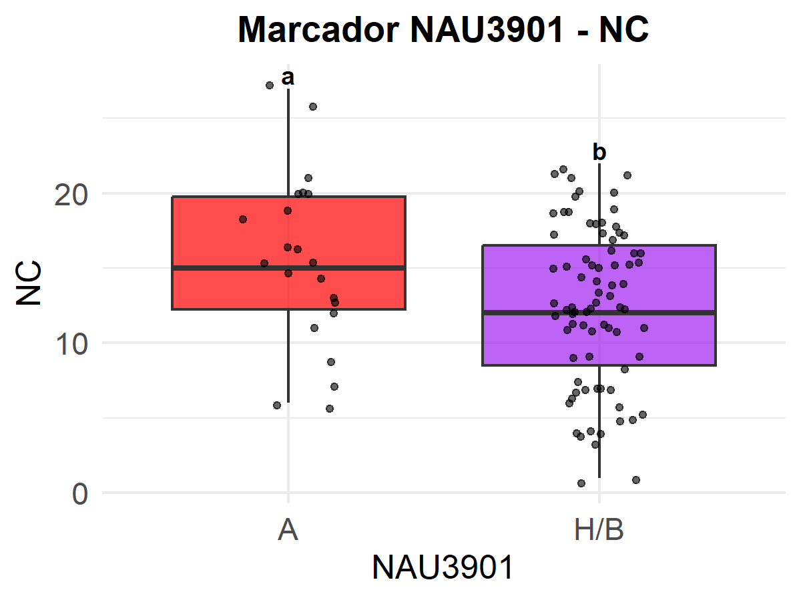
Figure 2.11: Distribución de los valores fenotípicos por clase genotípica del marcador NAU3901 para número de capullos por planta (NC). A: homocigoto SP-41255; H/B: heterocigoto/homocigoto BGSP-00166. Letras distintas indican diferencias significativas según LSD de Fisher (p ≤ 0,05)
2.4 Discusión
2.4.1 Cruce biparental, segregación transgresiva y parámetros genéticos
2.4.1.1 Generación de variabilidad y segregación transgresiva
Los resultados confirman que el cruzamiento generó amplia variabilidad fenotípica en la F2, con individuos que superaron los valores extremos de ambos parentales para los principales caracteres de rendimiento. La segregación transgresiva observada para RB, RF, NC, PC y UHML es consistente con reportes previos en algodón (Khan et al., 2005; Nidagundi et al., 2023) y puede atribuirse a la recombinación de alelos favorables y a efectos epistáticos entre loci segregantes.
La heterosis de la F1 para RB (40%) es comparable con Meredith (1984), quien identificó a este carácter como el de mayor expresión de heterosis en algodón. El RFD se aproximó al valor del mid-parental, sugiriendo un control predominantemente aditivo (McCarty et al., 2003). La disminución de los valores medios en la F2 respecto a la F1 es esperable y atribuible en parte a depresión por endogamia, aunque la amplia variabilidad generada compensa esta reducción desde el punto de vista de la selección.
2.4.1.2 Heredabilidad y estrategias de selección
Los valores de \(h_{bs}^{2}\) obtenidos para RFD, UHML y Mic (> 0,60) son consistentes con Meredith (1984), Ribeiro et al. (2017) y De Carvalho et al. (2022). Estos resultados indican que RFD y UHML son objetivos eficaces para la selección en generaciones tempranas de endogamia (F3–F4). La heredabilidad intermedia de RF, RB, PC, NC y Str es coherente con Tang et al. (1996), Nidagundi et al. (2023) y Peixoto et al. (2021) , sugiriendo que estos caracteres requieren selección en generaciones avanzadas. El IU mostró heredabilidad muy baja (0,07), limitando su utilidad como criterio de selección, en concordancia con Meredith Jr (2003) y Smith et al. (2010) .
Las correlaciones genéticas refuerzan los patrones observados en el Capítulo 1. La fuerte correlación positiva entre RF y NC confirma que el incremento en número de cápsulas es la vía principal para aumentar el rendimiento. La correlación genética negativa más pronunciada entre RFD y UHML —respecto a la correlación fenotípica— sugiere un antagonismo genético parcial que deberá contemplarse en los esquemas de selección (Meredith, 1984; Tang et al., 1996). Los resultados concuerdan con McCarty et al. (2006) y Tang et al. (1996) para los pares Str–RF y Mic–RFD.
2.4.2 Identificación de QTLs
2.4.2.1 Combinaciones fenotípicas favorables e identificación de QTLs
La identificación de individuos F2 con valores simultáneamente altos para PC y UHML, Str o IU representa un resultado de interés práctico, ya que estas combinaciones son difíciles de lograr mediante selección fenotípica directa dada la correlación negativa entre rendimiento y calidad. Los individuos candidatos identificados constituyen el material de partida para avanzar en generaciones de fijación orientadas a recuperar estas combinaciones en líneas homocigóticas.
El marcador BNL1231 presentó asociación significativa con UHML, en concordancia con regiones cromosómicas previamente descritas en la literatura (Shen et al., 2007; Z.-S. Zhang et al., 2005). El marcador NAU1167 se asoció con RFD, SCI e IU (R² = 0,15 para IU), siendo el de mayor poder explicativo entre los evaluados. Este resultado es coherente con estudios previos que han localizado QTLs para porcentaje de fibra y atributos de calidad en regiones de los cromosomas At y Dt del genoma de G. hirsutum (X. Liu et al., 2017; M. Wang et al., 2014; Xia et al., 2014). El marcador NAU3017 se asoció con la elongación de fibra (Elg), un carácter relacionado con la resistencia a la tracción y la procesabilidad industrial de la fibra (Liu et al., 2018; Shi et al., 2015). En todos los casos, el alelo de BGSP-00166 fue el asociado con mayores valores de SCI, UHML, IU y Elg, mientras que el alelo de SP-41255 se asoció con mayor RFD, reforzando la complementariedad de ambos parentales identificada en el Capítulo 1. El análisis del marcador NAU3901, también polimórfico entre los parentales, se encuentra en curso en la población F2.
Estos marcadores representan candidatos iniciales para su incorporación en estrategias de selección asistida por marcadores (SAM) en el programa de mejoramiento del INTA. Su validación en otros fondos genéticos y ambientes, y la integración con análisis de mapeo basados en intervalos, son pasos necesarios antes de su aplicación sistemática (Vicente & Tanksley, 1993).
2.5 Conclusión
El cruzamiento biparental entre BGSP-00166 y SP-41255 confirmó la hipótesis planteada: la población F2 generada presentó amplia variabilidad genética, con segregación transgresiva significativa para RB, RF, NC, PC y UHML. Los caracteres RFD (0,83), UHML (0,72) y Mic (0,6) exhibieron heredabilidades altas, siendo los objetivos más adecuados para la selección en generaciones tempranas; los componentes del rendimiento y Str presentaron heredabilidades intermedias, requiriendo selección en generaciones más avanzadas; e IU mostró baja heredabilidad (0,07), limitando su uso como criterio de selección en este cruzamiento.
Se identificaron individuos F2 con combinaciones favorables de rendimiento y calidad —especialmente para los pares PC–UHML, PC–Str e IU–NC—, validando el potencial de esta población para avanzar hacia la fijación de genotipos superiores adaptados a las condiciones subtropicales del norte de Santa Fe. La detección de asociaciones significativas entre los marcadores BNL1231, NAU1167 y NAU3017 y caracteres de calidad de fibra representa un punto de partida para la incorporación de selección asistida por marcadores en el programa de mejoramiento del INTA.